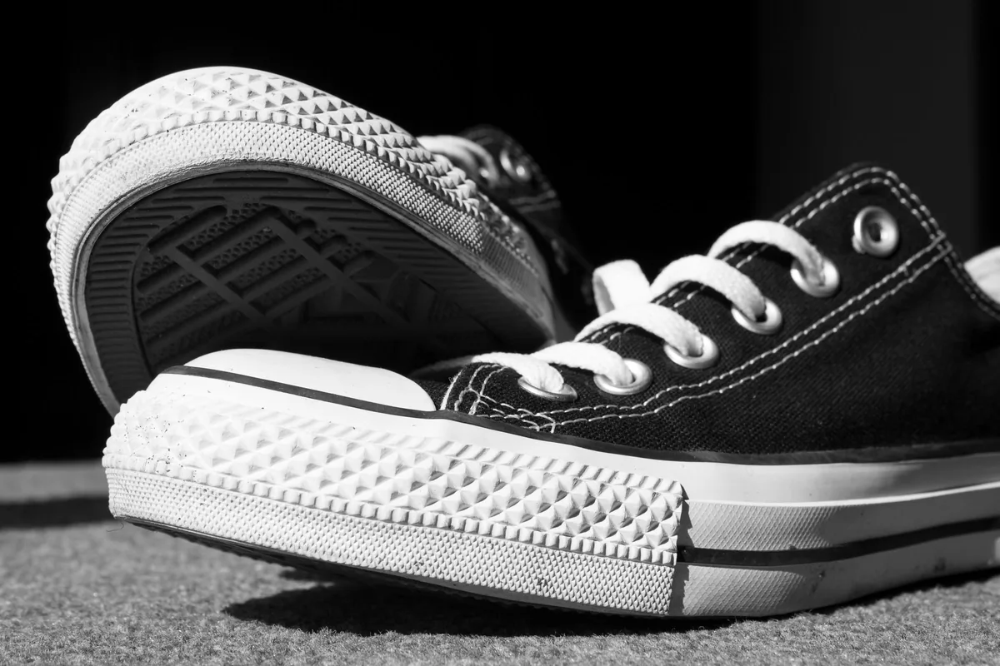
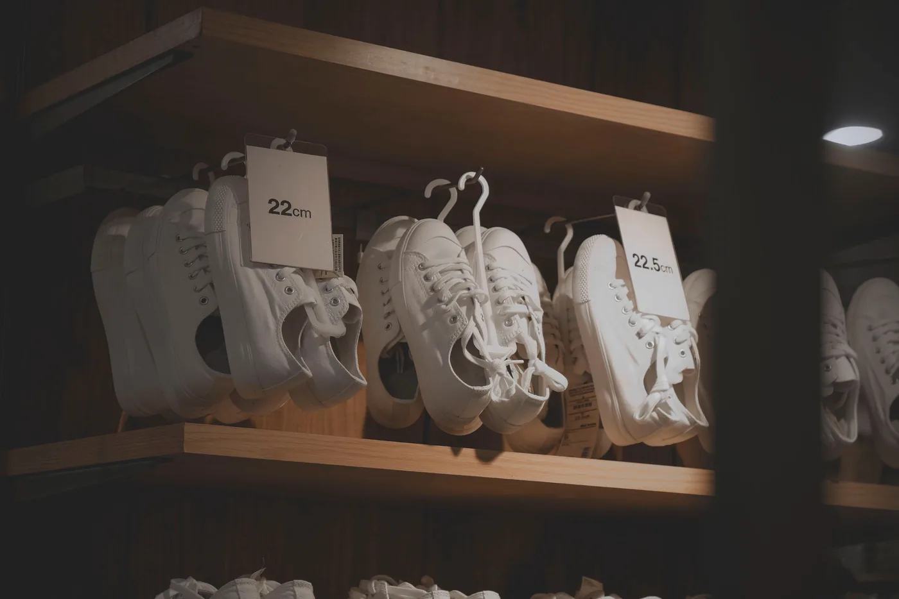

- 収蔵
- 000足
- 鑑定歴
- 00年
- 鑑定書
- 全足付帯
- 委託手数料
- 00%
その一足、
素性は語れますか。
ヴィンテージスニーカーの市場には、産地の分からない一足があふれています。年代の根拠がない「70年代」。撮影の角度でごまかした加水分解。すり替えられた箱。憧れて手に入れた一足が、語れる素性を持たないとしたら——それは古い靴であって、アーカイブではありません。
素性は、来歴の分からない靴を店に置きません。仕入れた一足はすべて検分台に載せ、五つの工程を通り、来歴票が書けたものだけが収蔵番号を受け取ります。書けなかった一足は、店に並びません。
来歴票という約束。
ARCHIVE No.0398 — 来歴票
- 品名
- 日本製 キャンバスローカット 藍
- 製造年代
- 1994年（織りネーム・ロット刻印より同定）
- 製法
- バルカナイズ製法 / コットンキャンバス
- 状態
- グレードB+ / ソール硬化なし / 甲布に経年の藍落ち
- 来歴
- 京都の元洋品店デッドストックを2024年に買付け。試着のみ
- 付属
- 元箱なし / 替え紐（未使用・当時物）
収蔵する全412足に、この来歴票と真贋鑑定書が付きます。分からないことは「不明」と書きます。それも素性のうちだからです。
収蔵目録CATALOG
毎週金曜、検分を終えた数足だけが目録に加わります。
-
No.0355
仏軍 トレーニングシューズ
1960s / デッドストック / グレードS
¥88,000
-
No.0371
米国製 スエードランナー 枯葉
1979 / ソール硬化なし / グレードA-
¥112,000
-
No.0398
日本製 キャンバスローカット 藍
1994 / バルカナイズ / グレードB+
¥24,000
-
No.0402
西ドイツ製 レザートレーナー
1988 / フルレザー / グレードA
¥68,000
-
No.0409
英国製 コートシューズ 白
1985 / 未補修 / グレードB
¥32,000
目録の全412足は店頭の台帳で確かめられます。
五つの検分PROCESS

- 一
型の同定
シルエットと木型から年代を絞る。資料は店の台帳860冊。
- 二
製法の確認
バルカナイズ痕、ステッチの規則性。作られ方は嘘をつきません。
- 三
ソールの検分
硬化度、黄変、磨耗の左右差。履けるヴィンテージかを判定します。
- 四
タグと刻印
織りネーム、ロット番号、箱の整合。すり替えはここで露見します。
- 五
紫外線検分
ブラックライトでリペア痕と後塗りを照らし出します。

靴は、歩き方を覚えている。
店主の砂田です。欧州の古着買付けを21年やって、最後に残ったのが靴でした。服は畳めば黙りますが、靴は違う。ソールの減り方に前の持ち主の歩き方が残っている。だから来歴を調べるのは、人の話を聞くのに似ています。
高円寺のこの店は11坪しかありません。そのかわり、置いてある一足は全部、私が検分台で素性を確かめたものです。分からなかった靴は、どれだけ格好よくても並べない。それだけを21年、守っています。
素性 店主砂田 亘
検分台の向こうから。
-
「来歴票の『不明』の書き方で信用しました。全部分かると言う店より、分からないと書ける店のほうが正直です。」
40代・コレクター / 仏軍トレーナー購入
-
「初めてのヴィンテージでした。サイズの相談に30分付き合ってくれて、結局その日いちばん安い一足を勧められた。また行きます。」
30代・はじめての一足 / キャンバスローカット購入
-
「父の遺した靴を委託しました。値段より、来歴票に父の街の名前が書かれたことがうれしかった。」
50代・委託 / レザートレーナー
買取と委託CONSIGN
持込査定 — 無料
検分台でその場で拝見します。査定額の根拠は来歴票の下書きでお見せします。納得いかなければ、そのままお持ち帰りください。
委託 — 手数料15%
売値はご相談のうえ一緒に決めます。検分と来歴票の作成、保管、販売まで店が請け負います。遠方の方は写真査定から。
価格と保証。
- 価格帯
- ¥18,000 〜 ¥280,000（税込・来歴票と鑑定書を含む）
- 保証
- 来歴票の記載と相違があった場合、30日以内は全額返金します
- 正直な但し書き
- 経年によるソール硬化・加水分解リスクは一足ごとに来歴票へ明記します
よくある検分。FAQ
もし偽物だったら？
鑑定書の内容と相違があれば全額返金します。21年でその申し出は二度、いずれも当方の年代同定の誤りでした。それも記録に残しています。
試着はできますか。
できます。デッドストックも含め、店の板張りの上でご試着ください。歩いた感触まで確かめてから決めてほしいのです。
古い靴を履いても大丈夫？
ソール硬化の程度を検分し、「履けるヴィンテージ」か「飾るアーカイブ」かを来歴票に書き分けています。履く前提の相談も歓迎です。
サイズが合うか不安です。
年代物は現行サイズ表記と実寸がずれます。全足の実寸（全長・足幅）を計測済みなので、普段の靴の実寸をお持ちください。
委託はどう始めれば？
店頭へお持ち込みいただくか、写真を添えてメールをください。検分のうえ、売値と手数料15%の条件をご提案します。
検分台で、
会いましょう。
気になる一足の収蔵番号を伝えていただければ、検分台に用意してお待ちします。
店で確かめる- 所在地
- 東京都杉並区高円寺北三丁目 素性ビル2F
- 最寄り
- JR中央線 高円寺駅 北口から徒歩6分
- 営業
- 13:00 – 20:00 / 水曜定休
- 連絡
- sujo.koenji@example.jp（写真査定はこちらへ）